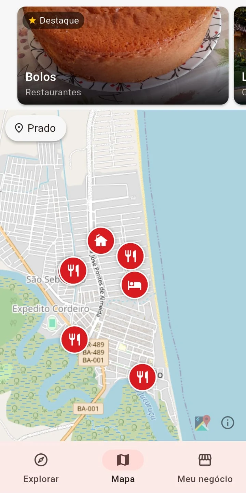

Kapon quer dizer perto.
Na língua indígena Xipaya, kapon significa “perto”. O app põe no mapa o que está perto de você: restaurantes, mercados, farmácias, padarias, pousadas, casas de temporada, passeios, serviços e o comércio da cidade.
Escolha o seu aparelho: Use no Android Use no iPhone
Grátis para usar · Sem comissão sobre as vendas · Feito no Brasil

Xipaya · perto
De onde vem o nome
Uma palavra pequena para uma ideia simples.
Kapon vem do Xipaya, língua de um povo indígena do Pará, e significa “perto”.
É isso que o app faz: aproxima quem chega de quem acolhe, quem tem fome de quem cozinha, quem procura um lugar para ficar de quem tem casa, pousada ou passeio para oferecer. O que é bom da cidade, a poucos passos de você.
Como funciona
Três passos entre você e o lugar certo.
Abra o mapa
Escolha a cidade e veja os negócios marcados no mapa, com os destaques passando no topo da tela.
Encontre o que procura
Filtre por categoria, veja fotos, avaliações, promoções e, nas casas de temporada, quantas pessoas cabem.
Fale e vá até lá
Chame o negócio pelo WhatsApp, abra a rota para chegar e compartilhe com quem vai junto.
Casa na praia
Casas de temporadaaté 8 hóspedes · 3 quartos · 5 camas · 2 banheiros
300 m da praia
Para quem visita
Tudo que a cidade tem, no mesmo mapa.
Em vez de perguntar de porta em porta, você vê o que existe por perto e decide com calma, com fotos, preços e a opinião de quem já foi.
Mapa da cidade
Restaurantes, mercados, farmácias, pousadas, passeios e lojas marcados onde realmente estão.
Casas de temporada
Capacidade, comodidades, regras e distância da praia, e o filtro “para quantas pessoas”.
Avaliações e favoritos
Leia o que outros visitantes acharam e guarde os lugares de que gostou.
Promoções e cupons
Ofertas dos negócios aparecem direto na página de cada um.
Sua pousada, seu restaurante, seu passeio
Aparece no mapa e no carrosselPara quem tem negócio
Seja o que está perto de quem chega.
Cadastre seu negócio, apareça no mapa da cidade e receba o contato direto dos clientes. Sem comissão sobre o que você vender.
Cadastro gratuito
Preencha os dados e as fotos pelo celular. A equipe do Kapon analisa e publica.
Vitrine com seus produtos
Monte o cardápio ou o catálogo com preço e foto, e marque o que está disponível.
Promoções e números
Crie cupons e acompanhe quantas pessoas viram, chamaram no WhatsApp ou pediram a rota.
Destaque Premium
Apareça no carrossel do mapa, com mais fotos e uma vitrine maior. Pagamento por Pix.
Dúvidas
Perguntas frequentes
Ficou com alguma dúvida? Fale com a gente pelo app.
O Kapon é gratuito?
Sim. Usar o app é grátis para quem visita e para quem tem negócio. O cadastro é gratuito e não há comissão sobre as vendas. O plano de destaque Premium é opcional.
O que significa “kapon”?
Significa “perto” na língua Xipaya, de um povo indígena do Pará. É a ideia do app: mostrar o que está perto de você.
Em quais cidades funciona?
Começamos por Prado, na Bahia. Outras cidades entram aos poucos. Se a sua cidade ainda não aparece, você pode ser o primeiro a chamar os negócios de lá.
Funciona no iPhone?
Sim. No iPhone você usa o Kapon direto no navegador, em app.kapon.com.br, e pode deixá-lo na tela inicial: no Safari, toque em Compartilhar e depois em “Adicionar à Tela de Início”. A versão para a App Store vem em breve.
Como cadastro meu negócio?
Baixe o app, crie sua conta e cadastre o negócio com fotos, descrição, contato e localização. Depois de analisado pela equipe, ele aparece para os visitantes.
Como funciona o destaque Premium?
É um plano opcional, pago por Pix, que coloca o seu negócio no carrossel do mapa, libera mais fotos e aumenta o limite de itens da vitrine. Você escolhe por quanto tempo.
Baixe o Kapon
Tem algo bom perto de você.
Abra o mapa e descubra o que a cidade tem a poucos passos.
No iPhone: abra no Safari, toque em Compartilhar e em “Adicionar à Tela de Início”.